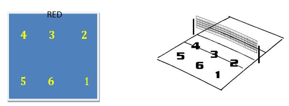
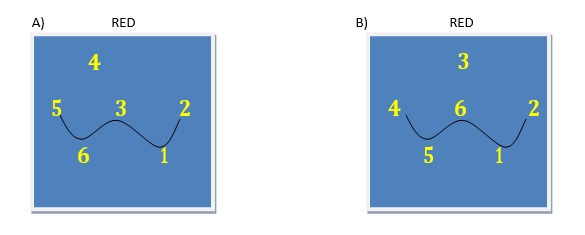

Conformación o composición de un equipo
Los jugadores que forman el equipo tienen una función que cumplir dentro de la cancha. La composición de un equipo tiene básicamente tres tipos de jugadores: armadores o colocadores, universales y rematadores.
Los armadores son los responsables del segundo toque conocido como “armado” del ataque. Los rematadores son los responsables del tercer toque (ataque) e indirectamente del primero. Los universales pueden hacer indistintamente cualquier función.
La composición del equipo depende del nivel técnico de los jugadores. Cuanto mayor nivel mayor especialización de la función.
La ubicación de los jugadores y la figura táctica a adoptar dependerá de la situación de partido, si estamos esperando el saque del equipo contrario, si estamos en situación de ataque o si estamos en situación de defensa.
Recepción del saque
Los sistemas de recepción del saque dependen del nivel técnico de los jugadores. Cuanto mayor nivel, menos cantidad de jugadores para recibir el saque. Todos estos sistemas protegen de la recepción al armador y se nombran a partir de la distribución de los jugadores para esperar la pelota.
Ejemplo: Recepción de saque en W, donde el armador se desentiende de la jugada y se coloca contra la red de espaldas prácticamente al saque, mientras que el resto se colocan en W, o sea 5 puntas con 3 jugadores sobre la línea de zona y dos más retrasados, si el armador está en una de las posiciones de ataque (Nº 2, 3 o 4), quien está detrás suyo “subirá” a formar parte de una de las puntas de la W de adelante o arriba.
Ejemplo gráfico de recepción en W:

Imagen tomada del portal Uruguay Educa
A) recepción de saque en W con el armador en el Nº 4.
B) recepción de saque con el armador en el Nº 3.

Imagen tomada del portal Uruguay Educa